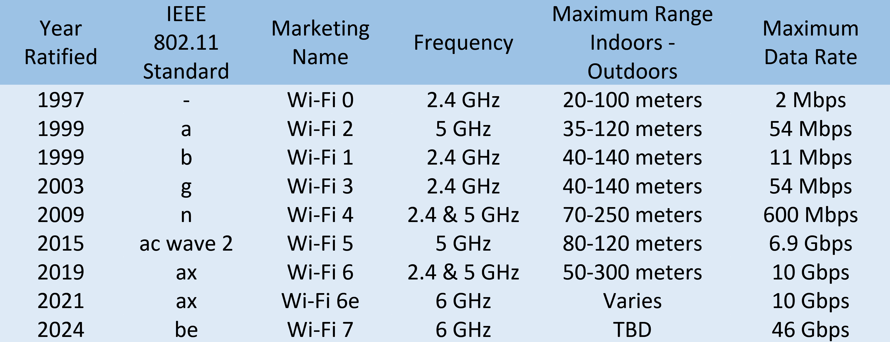

Wireless Networking
Introduction to Wireless Networking Technologies
In today's world, fewer and fewer devices are weighed down by
physical cables in order to connect to computer networks. With so
many portable computing devices in use, from laptops to tablets to
smartphones. We've also seen the rise of wireless networking.
Wireless networking is exactly what it sounds like a way to
network without wires. By the end of this lesson, you'll be able
to describe the basics of how wireless communication works. You'll
know how to tell the difference between infrastructure networks
and ad hoc networks. You'll be able to explain how wireless
channels, how wireless networks operate, and you'll understand the
basics of wireless security protocols. The most common
specifications for how wireless networking devices should
communicate are defined by the IEEE 802.11 standards. This set of
specifications, also called the 802.11 family make-up the set of
technologies we call Wi-Fi. Wireless networking devices
communicate with each other through radio waves. Different 802.11
standards generally use the same basic protocol, but might operate
at different frequency bands. A frequency band is a certain
section of the radio spectrum that's been agreed upon to be used
for certain communications. In North America, FM radio
transmissions operate between 88 and 108 megahertz. This specific
frequency band is called the FM broadcast band. Wi-Fi networks
operate on a few different frequency bands, most commonly the 2.4
gigahertz and 5 gigahertz bands. There are lots of 802.11
specifications, including some that exists just experimentally or
for testing. The most common specifications you might run into are
802.11b, 802.11a, 802.11g, 802.11n and 802.11ac. We won't go into
detail about each one here. For now, just know that we've listed
these in the order they were adopted. Each newer version of the
802.11 specifications has generally seen some improvement, whether
it's higher access speeds or the ability for more devices to use
the network simultaneously. In terms of our networking model, you
should think of 802.11 protocols as defining how we operate at
both the physical and the data link layers. An 802.11 frame has a
number of fields. The first is called the frame control field.
This field is 16 bits long and contains a number of sub-fields
that are used to describe how the frame itself should be
processed. This includes things like what version of the 802.11
was used. The next field is called a duration field.
It specifies how long the total frame is. The receiver knows how
long it should expect to have to listen to the transmission. After
this are four address fields. Let's take a moment to talk about
why there are four instead of the normal two. We'll discuss
different types of wireless network architectures in more detail
later in this lesson. But the most common setup includes devices
called access points. A wireless access point is a device that
bridges the wireless and wired portions of a network. A single
wireless network might have lots of different access points to
cover a large area. Devices on a wireless network will associate
with a certain access point. This is usually the one they're
physically closest to. But it can also be determined by all sorts
of other things like general signal strength and wireless
interference. Associations isn't just important for the wireless
device to talk to a specific access point. It also allows for
incoming transmissions to the wireless device to be sent by the
right access point. There are four address fields, because there
needs to be room to indicate which wireless access point should be
processing the frame. So we'd have our normal source address
field, which would represent the MAC address of the sending
device. But we'd also have the intended destination on the
network, along with a receiving address and a transmitter address.
The receiver address would be the MAC address of the access point
that should receive the frame. The transmitter address would be
the MAC address of whatever has just transmitted the frame. In
lots of situations, the destination and receiver address might be
the same. Usually the source and transmitter addresses are also
the same, but depending on exactly how a specific wireless network
has been architected, this won't always be the case. Sometimes
wireless access points will relay these frames from one another.
Since all addresses in 802.11 frame are MAC addresses, each of
those four fields is six bytes long. In-between the third and
fourth address fields, you'll find the sequence control field.
The sequence control field is 16 bits long and mainly contains a
sequence number used to keep track of ordering the frames after
this is the data payload section,
which has all of the data of the protocols further up the stack.
Finally, we have a frame check sequence field,
which contains a checksum used for a cyclical redundancy check,
just like how Ethernet does it.
Wi-Fi 6
Wi-Fi 6, formerly known as 802.11ax, is one of the largest leaps
in Wi-Fi technology since its introduction. This reading will
introduce you to the benefits and technology used in Wi-Fi 6.
Benefits of Wi-Fi 6
The Wi-Fi 6 network protocol is faster and more efficient for
networks with a larger number of connected devices.
Key benefits of Wi-Fi 6 technology include:
>
-
Higher data rates: Band splitting or increased client
group sizes allow for uploading and downloading greater
amounts of data.
-
Increased band capacity: Band utilization increased
from 80mHz to 160mHz, creating a faster connection from the
router to connected devices.
-
Better performance: The input/output streams are
doubled from the 4 by 4 allowed by Wi-Fi 5, to 8 by 8 in Wi-Fi
6, allowing more clients to be grouped.
-
Improved power efficiency: Devices only connect to the
network when sending or receiving data, increasing battery
life.
Capabilities of Wi-Fi 6
Wi-Fi 6 technology improves functionality and connectivity.
>
-
Channel sharing for better efficiency and shortens the time it
takes to send data once a user gives the send command.
-
Target Wake Time (TWT) improves the network speed and
increases battery life by allowing battery-powered devices to
sleep when not in use.
-
Multi-user MIMO (Multiple Input, Multiple Output) wireless
technology allows more data to be transferred simultaneously.
This ability increases capacity and efficiency in high
bandwidth applications like voice calls or video streaming.
-
160 MHz channel utilization gives more space for transmitting
data and increases bandwidth capability.
-
1024 Quadrature amplitude modulation combines two signals into
a single channel, so more data is encoded.
-
Orthogonal Frequency Division Multiple Access (OFDMA) allows
for bandwidth splitting, which is assigned dynamically by the
access point to separate devices.
-
Transmit beamforming is a technique that sends signals that
allow for more efficient higher data rates by targeting each
connected device.
Wi-Fi 6E extends Wi-Fi 6 into 6 GHz
Wi-Fi 6E is an additional certification for Wi-Fi 6 that has all
of the features of Wi-Fi 6 but adds a third 6 GHz band. Wi-Fi 6E
has more channels to use to broadcast, including 14 more 80MHz
channels and seven more 160MHz channels. The additional channels
allow networks with Wi-Fi 6E for better performance even when
streaming high-definition video or using virtual reality
devices.
Key takeaways
Wi-Fi technology will continue to change as the needs of
companies and users change. Wi-Fi 6 improves the quality of
networks with faster speeds and energy-saving technology.
Wi-Fi 6 uses technologies like channel sharing, Target Wake
Time, Multi-user MIMO, channel utilization, amplitude
modulation, OFDMA, and transmit beamforming to increase the
quality of a Wi-Fi network.
Wi-Fi 6E is an additional certification of Wi-Fi 6 that has even
faster speeds and stronger performance.
Resource for more information: article by the Wi-Fi Alliance:
Wi-Fi CERTIFIED 6
Supplemental Reading for Alphabet Soup
Alphabet Soup: Wi-Fi Standards
As an IT Support specialist, you may be responsible for
supporting wireless technologies. In this reading, you will
learn about the 802.11 Wireless-Fidelity (Wi-Fi) standards,
including the alphabet-coded updates: a, b, g, n, ac, ad, af,
ah, ax, ay, and az. You will also learn about the differences
between the 2.4 gigahertz (GHz) and 5 GHz Wi-Fi frequencies.
You may already be familiar with selecting from the 2.4 GHz and
5 GHz frequency options on your home Wi-Fi router. Perhaps you
also noticed the 802.11 specifications on the packaging for your
Wi-Fi router when you purchased it. Have you wondered what these
numbers and letters mean?
Wi-Fi 2.4 GHz and 5 GHz frequencies
There are multiple wireless technologies available today that
use various frequencies ranging from radio to microwave bands.
These wireless technologies include Wi-Fi, Z-Wave, ZigBee,
Thread, Bluetooth, and Near Field Communication (NFC). Radio and
microwave frequency bands each have specific ranges that are
divided into channels. Wi-Fi uses the 2.4 GHz and 5 GHz
microwave radio frequency band ranges for sending and receiving
data. Some Wi-Fi routers use multiple channels within each range
to avoid signal interference and to load-balance network
traffic. Wi-Fi is commonly used for wireless local area networks
(WLANs).
The following is a comparison of the performance characteristics
between the 2.4 GHz and 5 GHz frequency bands:
>
-
2.4 GHz
Advantages:
>
-
Has the longest signal range from 150 feet (45 meters)
indoors to 300 feet (92 meters) outdoors.
- Can pass through walls and other solid objects.
Disadvantages:
>
-
The long signal range also increases the chances of Wi-Fi
traffic being intercepted by cybercriminals.
-
Includes a limited number of channels. Can range from 11
to 14 channels, depending on regulations in the country of
use.
-
Can experience network traffic congestion and interference
with other Wi-Fi networks and wireless technologies, such
as BlueTooth, that overlap the 2.4 GHz frequency bands.
-
Microwave ovens also work in the 2.4 GHz frequency band
and can cause Wi-Fi interference.
-
Under specific conditions, the maximum achievable data
rate is 600 Mbps.
-
5 GHz
Advantages:
>
- Includes significantly more channels than 2.4 GHz.
-
Experiences fewer interference problems and less wireless
network traffic congestion than 2.4 GHz.
-
Can achieve over 2 Gbps data transfer speeds under
specific conditions.
Disadvantages:
>
-
The wireless range is limited to 50 feet (12 meters)
indoors and 100 feet (30 meters) outdoors.
-
Does not penetrate walls and other solid objects as well
as 2.4 GHz.
IEEE 802.11 standards
In 1997, the Institute of Electrical and Electronics Engineers
(IEEE) ratified the first 802.11 standard for wireless fidelity
(later branded as Wi-Fi). The standard was first published for
use by computer device manufacturers to use as a common protocol
for wireless communications. The IEEE has amended the 802.11
specifications multiple times over the years with updates and
additional enhancements to 802.11 Wi-Fi. The IEEE names each new
amendment with one or two letters appended to 802.11 (e.g.,
802.11n or 802.11ax). The IEEE plans to continue updating the
802.11 specifications until a new technology replaces Wi-Fi.
The majority of wireless networks use the IEEE 802.11 standards
for Wi-Fi. Wi-Fi networks include client devices (e.g., laptops,
tablets, smartphones, IoT devices, etc.) that are configured to
connect to wireless access points. This configuration is
referred to as “infrastructure mode”. Access points can serve
both wireless and wired network traffic. For wired traffic, the
access point works as a bridge between wireless devices and a
wired network. The access point connects to an Ethernet switch
through a wired Ethernet cable.
The various amended 802.11 specifications use the same
fundamental data link protocol. However, some characteristics
may vary at the OSI physical layer, including:
>
- signal ranges
- modulation techniques
- transmission bit rates
- frequency bands
- channels
Note that countries around the world may impose different
regulations on channel usage, power limitations, and Wi-Fi
ranges. A technology called dynamic frequency selection (DFS) is
also required to prevent 5 GHz Wi-Fi signals from interfering
with local radar and satellite communications.
A comparison of the frequencies, maximum data rates, and maximum
signal ranges for each 802.11 update over the years is detailed
below:

IEEE 802.11 major updates list:
>
-
802.11a (1999) - Wi-Fi 2
>
- Designed for 5 GHz frequency band only
- Offered a maximum data rate of 54 Mbps
- Offered a maximum signal range of 400 feet (120 m)
- Defined 23 non-overlapping channels at 20 MHz wide
-
802.11b (1999) - Wi-Fi 1
>
- Designed for 2.4 GHz frequency band only
- Offered a maximum data rate of 11 Mbps
- Offered a maximum signal range of 450 feet (140 m)
-
Defined 14 overlapping channels (frequent cause of
interference)
-
802.11g (2003) update to 802.11b - Wi-Fi 3
>
- Improved 2.4 GHz frequency band only
- Increased the maximum data rate to 54 Mbps
-
802.11n (2009) bandwidth increase - Wi-Fi 4
>
- Improved both 2.4 GHz and 5 GHz frequency bands
-
Access points could offer “dual-band” support with each
band implemented by a separate radio.
-
Increased bandwidth and reliability with “multiple input
multiple output" (MIMO) technology.
-
Allowed “channel bonding” for 5 GHz (two adjacent channels
could be combined).
-
Increased the maximum data rate to 72 Mbps per stream and
150 Mbps per stream for bonded channels. With specific
configurations, the maximum data rate could be as high as
600 Mbps.
- Increased maximum signal range of 825 feet (250 m)
-
802.11ac (2014) and Wave 2 (2015) bandwidth increases -
Wi-Fi 5
>
-
Improved the 5 GHz frequency band only, though access
points could still offer dual band support for older 2.4
GHz specifications.
-
Access points could offer triband support (one 2.4 GHz and
two 5 GHz radios).
- Supported wider bonded channels at 80 and 160 MHz.
-
Allowed up to eight streams with each 80 MHz channel.
-
Increased maximum data rates to 1 Gbps and could be as
high as 2.2 Gbps for specific configurations. Wave 2
increased the maximum data rate to 6.9 Gbps.
-
Increased sent data transmissions to up to 4 clients at
the same time. This was achieved by allowing access points
to use multiple antennas through downlink multiuser MIMO
(DL MU-MIMO) technology.
-
802.11ax (2019) bandwidth increases - Wi-Fi 6
>
-
Improved data stream rates to 600 Mbps per 80 MHz channel,
with combined data rates of over 1 Gbps for the 2.4 GHz
frequency and 4.8 Gbps for the 5 GHz frequency.
-
Increased sent data transmissions to up to 8 clients at
the same time with downlink MU-MIMO.
-
Added support for full-duplex MU-MIMO to receive uplink
data from multiple client devices.
-
Added support for “orthogonal frequency division multiple
access” (OFDMA), which works with MU-MIMO to sustain high
data rates during periods of high client device traffic.
-
Requires all client devices to use WPA3 security
protocols.
-
Wi-Fi 6e (2020) bandwidth increases
>
-
Added support for a new 6 GHz frequency band, which has a
combined maximum data rate speed of 10 Gbps (shared by
multiple devices).
- Added new channels to reduce interference.
-
Improved frequency space for 80 and 160 MHz channels.
Supplemental Reading for IoT Data Transfer Protocols
IoT Data Transfer Protocols
In this reading, you will learn how Internet of Things (IoT)
devices send and receive data across networks. As an IT Support
specialist, you may need to support data collection from IoT
devices. For example, you may work for a company that uses an
array of IoT sensors in a manufacturing setting to help with the
remote monitoring and proactive maintenance of industrial
machines. You may need to manage the software applications and
data transfer protocols that support automated and human
interaction with the IoT devices and the data they collect.
Data protocol models used with IoT
There are two common data protocol models to illustrate how
low-power IoT devices share data:
>
-
Request/Response model: Often used in distributed
systems where the communication flow between servers and
clients consists of requests and responses for data. Examples
include HTTP and CoAP (described in the “IoT data protocols at
the application layer” section below)
-
Publish/Subscribe model: A framework for message
exchanges between publishers (hosts) and subscribers (clients)
that are routed through a broker. Subscribers can sign up to a
channel to receive notices through the broker when the
publisher releases new messages. Examples: MQTT and AMQP
(described in the “IoT data protocols at the application
layer” section below).
IoT data protocols at the application layer
IoT devices can collect environmental data around their physical
location (e.g., temperature), equipment data (e.g., maintenance
status), and metered data (e.g., electricity usage). Data
protocols are needed to transfer and format the data for use by
applications that interface with either humans or automated
systems. IoT devices can be configured to use various data
transfer and formatting protocols at the OSI
application/software layer of communication.
Most IoT devices can use at least one of the following data
transfer protocols:
>
-
HyperText Transfer Protocol / Secure (HTTP/HTTPS): HTTP
and HTTPS are the most widely used information transfer
protocols across the World Wide Web (WWW). The protocols
define how information is formatted and transmitted.
HTTP/HTTPS uses ASCII formatting, has a header size of 8
bytes, and is designed for transmitting documents. HTTP/HTTPS
use either Transmission Control Protocol (TCP) or User
Datagram Protocol (UDP) for sending information across the
internet. HTTP/HTTPS uses the request/response model. When a
website address is entered into a browser, HTTP/HTTPS sends a
request to the site’s web server, which then returns an
HTTP/HTTPS formatted response to the browser. The protocols
use ports 80 or 8080 and data security is provided on the
HTTPS version of the protocol. HTTP is supported by Google
Cloud IoT Core for device-to-cloud communication.
-
Machine-to-Machine (M2M) Communication Protocols: A set
of direct communication methods for low-power devices,
machines, and systems. There are three primary architectural
and protocol groups in M2M electronic communications:
>
-
Representational State Transfer (REST): An
architectural style for communication amongst web
accessible systems.
-
Service-oriented Architectures (SOA): An
architecture for data exchanges in industrial automation
systems.
-
Message Oriented Protocols: A protocol for
asynchronous data transfers for distributed systems.
-
Message Queue Telemetry Transport (MQTT): An IoT data-centric
interaction protocol for M2M that uses a simple
publish-subscribe model. MQTT supports Quality of Service
(QoS), uses TCP for sending information, and utilizes Secure
Sockets Layer (SSL) and Transport Layer Security (TLS) for
security. MQTT using binary format and 2-byte header sizes for
efficient messaging. MQTT is supported by Google Cloud IoT
Core for device to cloud communication.
-
Constrained Application Protocol (CoAP): A web transfer
protocol for IoT constrained nodes and networks designed for
M2M applications. CoAP is used for IoT applications like
building automation and smart energy management. CoAP is very
similar to HTTP: both are based on the REST model and both
place resources on a server that is accessible to clients via
a URL.
-
Advanced Message Queuing Protocol (AMQP): An open standard for
messaging amongst applications in different organizations
and/or platforms. Its purpose is to remove vendor lock-in for
app communication. In addition to interoperability, AMQP also
offers reliability and security.
-
Extensible Messaging and Presence Protocol (XMPP): A
decentralized, open standard for chat, messaging, video and
voice calls, collaboration tools, and more. Built upon Jabber,
XMPP offers a proven communication technology that is
extensible, flexible, and diverse.
-
Data Distribution Service (DDS): An API standard and
middleware protocol from the Object Management Group.
Middleware exists in the OSI applications layer, between
software and the operating system. DDS uses the
publish-subscribe communications model. DDS is also
data-centric, provides low-latency data connectivity, and
helps the devices in an IoT ecosystem share data more
efficiently. DDS is reliable, scalable, and provides control
of QoS parameters, including bandwidth and resource limits.
Wireless Network Configurations
There are a few main ways that a wireless network can be
configured. There are ad-hoc networks where nodes all speak
directly to each other. There are wireless LANS or WLANS, where
one or more access points act as a bridge between a wireless and a
wired network, and there are mesh networks which are a hybrid of
the two. Ad-hoc networks are the simplest of the three. In an
ad-hoc network, there isn't really any supporting network
infrastructure. Every device involved with the network
communicates with every other device within range, and all nodes
help pass along messages.
Even though they're the most simple, ad-hoc networks aren't the
most common type of wireless network, but they do have some
practical applications. Some smartphones can establish ad-hoc
networks with other smartphones in the area so that people can
exchange photos, video, or contact information. You'll also
sometimes see ad-hoc networks used in industrial or warehouse
settings where individual pieces of equipment might need to
communicate with each other, but not with anything else. Finally,
ad-hoc networks can be powerful tools during disaster situations.
If a natural disaster like an earthquake or hurricane knocks out
all of the existing infrastructure in an area, disaster relief
professionals can use an ad-hoc network to communicate with each
other while they perform search and rescue efforts. The most
common type of wireless network you'll run into in the business
world is a wireless LAN, or WLAN. A wireless LAN consists of one
or more access points which act as bridges between the wireless
and wired networks.
The wired network operates as a normal LAN, like the types we've
already discussed. The wired LAN contains the outbound Internet
link. In order to access resources outside of the WLAN, wireless
devices would communicate with access points. They then forward
traffic along to the gateway router where everything proceeds like
normal. Finally, we have what's known as mesh networks. Mesh
networks are like ad-hoc networks, since lots of the devices
communicate with each other wirelessly, forming a mesh.
If you were to draw lines for all the links between all the nodes,
most mesh networks you'll run into are made up of only wireless
access points, and will still be connected to a wired network.
This network lets you deploy more access points to the mesh
without having to run a cable to each of them. With this setup,
you can really increase the performance and range of a wireless
network. (Required) en
Wireless Channels
The concept of channels is one of the most important things to
understand about wireless networking. Channels are individual,
smaller sections of the overall frequency band used by a wireless
network. Channels are super important because they help address a
very old networking concern, collision domains. You might remember
that a collision domain is anyone network segment where one
computer can interrupt another. Communications that overlap each
other can't be properly understood by the receiving end. So when
two or more transmissions occur at the same time, also called a
collision, all devices in question have to stop their
transmissions. They wait a random amount of time and try again
when things quiet down. This really slows things down. The problem
caused by collision domains has been mostly reduced on wired
networks through devices called switches. Switches, remember which
computers live on which physical interfaces? So traffic is only
sent to the node it's intended for.W ireless networking doesn't
have cables. So there aren't physical interfaces for a wireless
device to connect to. That means we can have something that works
like a wireless switch. Wireless devices are doomed to talk over
each other, channels help fix this problem to a certain extent.
When we were talking about the concept of frequency bands, we
mentioned that FM radio in North America operates between 88
megahertz and 188 megahertz. But when we discussed the frequency
bands we used by wifi, we just mentioned 2.4 gigahertz and five
gigahertz. This is because that's really just shorthand for where
these frequency bands actually begin for wireless networks that
operate on the 2.4 gigahertz band. What we really mean is that
they operate on roughly the band from 2.4 gigahertz to 2.5
gigahertz between these two frequencies are a number of channels,
each with a width of a certain megahertz. Since different
countries and regions have different regulatory committees for
what radio frequencies might be used for what. Exactly how many
channels are available for use depends on where in the world you
are. For example, dealing with an 802.11 B network, channel 1
operates at 24 12 megahertz. But since the channel with is 22
megahertz, the signal really lives on the frequencies between
2.401 megahertz and 2.423 megahertz.
This is because radio waves are imprecise things so you need some
buffer around what exact frequencies a transmission might actually
arrive on. Some channels overlap, but some are far enough apart so
they won't interfere with each other at all.
Let's look again at an 802.11 B network running on the 2.4
gigahertz band because it's really the simplest and the concepts
translate to all other 802.11 specifications. With a channel width
of 22 megahertz, Channel 1 with its midpoint at 2.412 megahertz is
always completely isolated from channel 6with its midpoint at
2.437 megahertz. For an 802.11 B network this means that channels
1 and 6 and 11 are the only ones that never overlap at all.
That's not all that matters though. Today, most wireless
networking equipment is built to auto sense what channels are most
congested. Some access points will only perform this analysis when
they start up. Others will dynamically change their channel as
needed. Between those two scenarios and manually specified
channels you can still run into situations where you experience
heavy channel congestion. This is especially true in dense urban
areas with lots of wireless networks in close proximity. So why is
this important in the world of IT support? Well, understanding how
these channels overlap for all of the 802.11 specifications is a
way you can help troubleshoot bad wireless connectivity problems
or slowdowns in the network. You want to avoid collision domains
wherever you can. I should call out that it's not important to
memorize all of the individual numbers we've talked about. The
point is to understand how collision domains are a necessary
problem with all wireless networks and how you can use your
knowledge in this space to optimize wireless network deployments.
You want to make sure that both your own access points and those
of neighboring businesses overlap channels as little as possible.
(Required) en
Wireless Security
When you're sending data over a wired link, your communication has
a certain amount of inherent privacy. The only devices that really
know what data is being transmitted are the two nodes on either
end of the link. Someone or some device that happens to be in
close proximity can't just read the data. With wireless networking
this isn't really the case since there aren't cables just radio
transmissions being broadcast through the air. Anyone within range
could hypothetically intercept any transmissions whether they were
intended for them or not. To solve this problem, WEP was invented.
WEP stands for Wired Equivalent Privacy and it's an encryption
technology that provides a very low level of privacy. Actually
it's really right there in the name Wired Equivalent Privacy.
Using WEP protects your data a little, but it should really only
be seen as being as safe as sending unencrypted data over a wired
connection. The WEP standard is a really weak encryption
algorithm. It doesn't take very long for a bad actor to be able to
break through this encryption and read your data. You'll learn
more about key lengths and encryption in a future course but for
now it's important to know that the number of bits in an
encryption key corresponds to how secure it is. The more bits in a
key the longer it takes for someone to crack the encryption. WEP
only uses 40 bits for its encryption keys and with the speed of
modern computers this can usually be cracked in just a few
minutes. WEP was quickly replaced in most places with WPA or Wifi
Protected Access. WPA by default uses a 128-bit key, making it a
whole lot more difficult to crack than WEP. Today the most
commonly used encryption algorithm for wireless networks is WPA2,
an update to the original WPA. WPA2 uses a 256 bit key, make it
even harder to crack. Another common way to help secure wireless
networks is through MAC filtering. With MAC filtering, you
configure your access points to only allow for connections from a
specific set of MAC addresses belonging to devices you trust. This
doesn't do anything more to help encrypt wireless traffic being
sent through the air, but it does provide an additional barrier
preventing unauthorized devices from connecting to the wireless
network itself.
Protocols & Encryption
WPA3 Protocols & Encryption
Protocols and encryption are vital components in cybersecurity.
Network security continues to evolve along with technological
innovations and ever-increasing computing power. You have learned
about WPA2 and how it improved the security of the Wi-Fi Protected
Access (WPA) protocol. In this reading, you will explore WPA3, the
third iteration of WPA wireless security. You will also learn
about various internet connectivity technologies, as well as the
basics of wireless and cellular networking.
WPA3 is built upon the WPA2 protocol and is intended to replace
WPA2. The WPA3 protocol introduces new features and methods to
repair the security weaknesses of WPA2. The benefits of this
advancement in Wi-Fi security include:
>
- Simplified wireless security
- Stronger authentication
- Powerful encryption
- Stable business continuity
- Enhanced security methods
- Replacement for legacy protocols
-
Protected Management Frames (PMF) requirement for
enterprise networks
WPA3 offers two versions, a personal and an enterprise version.
WPA3-Personal
WPA3-Personal is intended for individual users and personal/home
Wi-Fi networks. This protocol addresses common cybersecurity
weaknesses that affect consumers’ wireless devices. It also
simplifies Wi-Fi security for users. The improvements to
WPA3-Personal include:
>
-
Natural password selection: Gives users the ability to
set passwords that are easier for the user to remember.
-
Increased ease of use: Users do not need to change the
way they connect to Wi-Fi to benefit from WPA3’s improved
security.
-
Forward secrecy: If a password is stolen, WPA3 can
continue to protect data that is transmitted.
-
Simultaneous Authentication of Equals (SAE):
WPA3-Personal improves upon the WPA2-Personal Pre-Shared Key
(PSK) handshake protocol. SAE uses PSK to generate a Pairwise
Master Key (PMK). The PMK uses password-based authentication
and is shared between a Wi-Fi access point and a wireless
device. The pair use a complex, multi-stage process for
proving to one another that they each possess the PMK. This
complex handshake makes it extremely difficult for
cybercriminals to intercept packets in order to extract an
identifiable authentication key. If the SAE transaction is
successful, the wireless device will pass the authentication
stage and gain access to the secured Wi-Fi network.
The SAE authentication also reduces the probability of
successful dictionary and brute force attacks, in which
cybercriminals try to crack short, weak, and commonly used
passwords. Additionally, SAE corrects a weakness exploited by
cybercriminals who could perform key reinstallation attacks
(KRACKs) when in close proximity to a Wi-Fi user. This type of
attack could decrypt data and expose passwords, credit card
information, photos, chats, emails, and more.
WPA3-Enterprise
WPA3-Enterprise is intended for business networks with multiple
users. This protocol addresses the WPA2-Enterprise weaknesses
that cybercriminals have been able to exploit. In addition to
the WPA3-Personal SAE improvements, the WPA3-Enterprise security
improvements and options include:
-
Galois/Counter Mode Protocol (GCMP-256): The Advanced
Encryption Standard (AES) with GCMP-256-bit encryption
replaces the WPA2 128-bit AES-Counter Mode Protocol (CCMP)
Cipher Block Chaining Message Authentication Code (CBC-MAC).
GCMP provides data integrity and confidentiality. The
GCMP-256-bit encryption strength takes significantly more
computing power for cybercriminals to crack than 128-bit
encryption. The average person would not have access to that
level of computing power. GCMP-256-bit encryption provides a
stronger security protocol and makes it harder for
cybercriminals to perform Meddler-in-the-Middle attacks.
-
Opportunistic Wireless Encryption (OWE): OWE improves
upon the WPA2 wireless encryption standard of 802.1x Open
Authentication and Extensible Authentication Protocol (EAP).
In WPA2, EAP required additional support to help it encrypt
and authenticate login credentials. In the WPA3 protocol, OWE
replaces EAP with a solution that encrypts and authenticates
all wireless traffic. It also replaces Wi-Fi passwords by
assigning a unique key to each device that has permission to
access the network. This technology repairs a weakness Wi-Fi
users experience in open networks, which are often found in
restaurants, coffee shops, hotels, airports, malls, and more.
-
Wi-Fi Device Provisioning Protocol (DPP): DPP improves
upon the WPA2 Wi-Fi Protected Setup (WPS) encryption
technology between wireless devices and routers. WPA3’s DPP
uses QR codes or NFC tags to grant passwordless Wi-Fi access
to wireless devices.
-
384-bit Hashed Message Authentication Mode (HMAC) with
Secure Hash Algorithm (SHA):
HMAC creates hash code from a secret key. This hash code is
sent with each message passed between a Wi-Fi access point and
a user’s device. The hash code from the origin of the message
is compared to the hash code from the receiver of the message
to determine if the hash codes match. A discrepancy between
the two hashes would indicate that the message was compromised
or corrupted during transmission.
-
Elliptic Curve Diffie-Hellman Exchange (ECDHE) and Elliptic
Curve Digital Signature Algorithm (ECDSA):
In WPA3, key management and authentication use the ECDHE
protocol and ECDSA encryption for faster performance. The
protocol is supported by most browsers. This key management
technology replaces the WPA2 4-way handshake.
Key takeaways
As the tech industry develops more powerful computers,
cybercriminals will use them to crack older encryption
standards. The need to create more complex encryption algorithms
will always be present in order to stay ahead of the evolving
tools used by cybercriminals.
For WPA3-Personal, some of the new features include:
>
- Natural password selection
- Increased ease of use
- Forward secrecy
- Simultaneous Authentication of Equals (SAE)
For WPA3-Enterprise, some of the new features include:
- Galois/Counter Mode Protocol (GCMP-256)
- Opportunistic Wireless Encryption (OWE)
- Wi-Fi Device Provisioning Protocol (DPP)
-
384-bit Hashed Message Authentication Mode (HMAC) with Secure
Hash Algorithm (SHA)
-
Elliptic Curve Diffie-Hellman Exchange (ECDHE) and Elliptic
Curve Digital Signature Algorithm (ECDSA)
Cellular Networking
Another super popular form of wireless networking is cellular
networking, also called mobile networking. Cellular networks are
now common all over the world. In some places, using a cellular
network for Internet access is the most common way of connecting.
At a high level, cellular networks have a lot in common with the
802.11 networks we've already talked about. Just like there are
many different 802.11 specifications, there are lots of different
cellular specifications. Just like Wi-Fi, cellular networking
operates over radio waves and there are specific frequency bands
specifically reserved for cellular transmissions.
One of the biggest differences is that these frequencies can
travel over longer distances more easily, usually over many
kilometers or miles. Cellular networks are built around the
concept of cells. Each cell is assigned a specific frequency band
for use.

Neighboring cells are set up to use bands that don't overlap. Just
like how we discussed the optimal setup for a WLAN with multiple
access points. In fact, the cell towers that broadcasts and
receives cellular transmissions can be thought of like access
points, just with a much larger range. Lots of devices today use
cellular networks for communication, and not just phones, also
tablets and some laptops also have cellular antennas. It's become
more and more common for high-end automobiles to have built-in
cellular access too.
Mobile Device Networks
Mobile devices use wireless networks to communicate with the
internet and with other devices. Depending on the device it might
use cellular networks, wifi, Bluetooth and or one of several
internet of things or IOT network protocols. As an IT support
specialist, you'll often have to help troubleshoot networking or
connectivity issues for end users. You'll need to figure out what
network the device should be connecting to and then make sure the
device is configured to do that. For example turning individual
components and systems on and off is a common feature in mobile
devices which can sometimes be confusing for the end users.
Battery life is precious and people switch off these network
radios to save battery life if someone brings the device to you
because it won't connect to a wireless network. The first thing
you should check is whether the wireless radio has been disabled.
Yep sometimes the solution is really that simple. You can toggle
the wifi Bluetooth and cellular networks on or off in the devices
settings. Riproduci il video a partire da :1:10 e segui la
trascrizione1:10 Lots of mobile devices will also have an airplane
mode that disables all wireless networking at once. It is also
pretty common for a mobile device to have multiple network
connections at the same time. Both wifi and cellular data for
example, mobile devices will try to connect to the internet using
the most reliable and least expensive connection available. That's
right, I said least expensive. Many mobile operating systems
understand the concept of metered connections. Does your cell
phone plan have a limit on how much data you can use in a month or
charge you based on how much data you use? Then you have immediate
connection through that cell phone plan. Mobile devices will use
other non metered connections like wi-fi if they're available so
that you don't use up your limited data connection. Here's another
example of how you might help as an IT support specialist. Let's
say you have a remote employee that works from a coffee shop
sometimes, but the wi-fi network in the coffee shop restricts
access to some websites. The employee might choose to disconnect
from the wifi network and use the sale network even though it
might be more expensive. So that they can access the websites they
need, by toggling the wi-fi and cellular data connections. You can
force the device to use the network connection that you want to
use, if you're troubleshooting an unreliable wireless network
connection. Keep in mind that wireless networking works by sending
a radio signal between two antennas. What? You don't see an
antenna? Well surprise your device has one, it might be printed on
a circuit board or it might have a wire or ribbon that runs
through your device. The radio signal will get weaker the farther
it has to travel, especially if it passes through or reflects off
of things between the two antennas. Mobile devices can go with you
to places where there's too much distance or interference for the
wireless signal to be reliable. Even the way the mobile device is
held or worn can impact the strength of the signal. So wi-fi and
cellular data networks are used to connect your mobile devices to
the Internet. But there's one other type of wireless network to
talk about, mobile devices connect to their peripherals using
short range wireless networks. The most common short range
wireless network is called Bluetooth. You might have used
Bluetooth headphones, keyboards or mice before. When you connect a
wireless peripheral to a mobile device, we call that pairing the
devices. The two devices exchange information, sometimes including
a pin or password so that they can remember each other. From then
on the devices will automatically connect to each other when
they're both powered on and in range. Pairing devices like this
can sometimes fail and you might need to make your device forget
the peripheral so it can be paired again. Remember Bluetooth can
be turned off very easily when you're troubleshooting a Bluetooth
peripheral, always make sure that Bluetooth is on.
Supplemental Reading for Mobile Device Networks
Wireless Network Protocols for IoT
In this reading, you will learn how Internet of Things (IoT)
devices connect to wireless networks. As an IT Support
specialist, you may need to support wireless IoT devices in a
networked environment. For example, you may have a client who
needs to install a smart, wireless security system for their
home or office. The client might need assistance with connecting
the security system to a private network for onsite monitoring
and/or to the internet for remote monitoring. Understanding the
properties of wireless IoT networks will help you select
appropriate network protocols for various IoT applications.
IoT wireless network protocols at the physical layer
IoT devices can use both wired and wireless methods to connect
to the Internet. For wireless connections, there are multiple
network protocols that manufacturers configure IoT devices to
use. Some of these network protocols support global internet
connectivity, while others are intended for short-distance
Personal Area Networks (PANs). Network protocols connect at the
OSI physical layer.
Most IoT devices can use at least one of the following network
protocols:
>
-
Wireless-Fidelity (Wi-Fi): Wi-Fi is the more familiar
brand name for the IEEE 802.11 standard for wireless
networks. Wi-Fi is the most common wireless protocol across
the world, with billions of devices capable of using Wi-Fi,
including many IoT devices. Wi-Fi is a great option when
needing to integrate IoT devices into an existing IP network
that is connected to the internet. Wi-Fi 6 can support up to
500 Mbps data transfer speeds, for fast performance with
large amounts of data. IoT networks often include a hub or a
control system that uses Wi-Fi to facilitate wireless
networking.
As you have learned previously, Wi-Fi networks communicate
on radio frequencies 2.4 GHz and 5 GHz. The 2.4 GHz
frequency extends to 150 feet (45 meters) indoors and 300
feet (92 meters) outdoors. However, the 2.4 GHz frequency
can experience congestion due to a limited number of
channels. Plus, 2.4 GHz is more likely to experience
interference from other nearby devices that use the same
frequency, like microwaves. The 5 GHz frequency provides a
stronger signal than 2.4 GHz and has more channels to handle
more traffic. The 5 GHz drawback is that its range is
limited to 50 feet (12 meters) indoors and 100 feet (30.6
meters) outdoors.
-
IEEE 802.15.4: An inexpensive, low-power wireless
access technology intended for IoT devices that operate on
battery power. IEEE 802.15.4 uses the 2.4 GHz or lower radio
band frequencies. IEEE 802.15.4 is normally used for
low-rate wireless personal area networks (LR-WPANs) and uses
a 128-bit encryption. Examples of IoT technologies that use
IEEE 802.15.4 network connections include:
>
-
ZigBee: An LR-WPAN intended for smart home use. However,
ZigBee has also been adopted globally for commercial IoT
products. ZigBee includes a universal language that
facilitates the interoperability of smart objects through
a self-healing mesh network. ZigBee LR-WPAN networks can
be accessed through Wi-Fi or Bluetooth.
-
Thread: A low-latency wireless mesh networking protocol
based on IPv6 addressing and existing open standards and
technologies. These characteristics make thread networks
compatible with a broad spectrum of IoT ecosystems. Thread
devices do not use proprietary gateways or translators, making
them inexpensive and easier to implement and maintain than
other wireless technologies. Thread is used by the Google Nest
Hub Max.
-
Z-Wave: An interoperable, wireless mesh protocol
(described below) that is based on low powered radio frequency
(RF) communications. The Z-Wave protocol uses an RF signal on
the 908.2MHz frequency band and extends 330 feet. Z-Wave
allows users to control and monitor IoT smart devices. Z-Wave
is inexpensive, reliable, and simple to use. The Z-wave
protocol supports a closed network for security purposes. Over
3300 types and models of home and business IoT devices are
certified to use Z-Wave technology, with more than 100 million
devices in use worldwide.
-
Wireless mesh network (WMN): Mesh networks are used by
many popular wireless IoT network protocols, like Zigbee and
Z-Wave, for device communication. Wireless mesh networks use
less power than other wireless connectivity options. Wireless
mesh is a decentralized network of connected wireless access
points (WAP), also called nodes. Each WAP node forwards data
to the next node in the network until the data reaches its
destination. This network design is “self-healing,” meaning
the network can recover on its own when a node fails. The
other nodes will reroute data to exclude the failed node.
Wireless mesh is a good option for high reliability and low
power consumption, which is better for battery powered IoT
devices. Wireless mesh networks can be configured to be full
or partial mesh:
-
Full mesh network: Every node can communicate with all of
the other nodes in the network.
-
Partial mesh network: Nodes can only communicate with
nearby nodes.
-
Bluetooth: Bluetooth is a widely used wireless network
that operates at a 2.45 GHz frequency band and facilitates up
to 3 Mbps connections among computing and IoT devices.
Bluetooth has a range of up to 100 feet (30.6 meters) and can
accommodate multiple paired connections. It is a good choice
for creating a short distance wireless connection between
Bluetooth enabled devices. Bluetooth is often used by
computing devices to manage, configure, control, and/or
collect small amounts of data from one or more close range IoT
devices. For example, Bluetooth may be used to control smart
home lighting or thermostat IoT devices from a smartphone.
-
Near-Field Communication (NFC): NFC is a short-range,
low data, wireless communication protocol that operates on the
13.56 MHz radio frequency. NFC technology requires a physical
chip (or tag) to be embedded in the IoT device. NFC chips can
be found in credit and debit cards, ID badges, passports,
wallet apps on smartphones (like Google Pay), and more. A
contactless NFC scanner, like a Point-of-Sale (PoS) device, is
used to read the chip. This scanner communication connection
often requires the IoT device to be within 2 inches (6 cm) of
the scanner, but some NFC chips have an 8 inch (20 cm) range.
This short-distance range helps to limit wireless network
security threats. However, criminals can carry a portable NFC
scanner into a crowded area to pick up NFC chip data from
items like credit cards stored inside purses and wallets. To
protect against this type of data theft, the cards should be
placed inside special NFC/RFID sleeves that make the chips
unreadable until they are removed from the sleeves. NFC
technology may also be used in the pairing process for
Bluetooth connections.
-
Long Range Wide Area Network (LoRaWan): LoRaWan is an
open source networking protocol designed to connect battery
powered, wireless IoT devices to the Internet for widely
dispersed networks.


 Since the DHCP Offer is also a broadcast, it would reach every
machine on the network. The original client would recognize that
this message was intended for itself. This is because the DHCP
offer has the field that specifies the MAC address of the client
that sent the DHCP discover message. The client machine would now
process this DHCP offer to see what IP is being offered to it.
Technically, a DHCP client could reject this offer. It's totally
possible for multiple DHCP servers to be running on the same
network and for a DHCP client to be configured to only respond to
an offer of an IP within a certain range. But this is rare. More
often, the DHCP client would respond to the DHCP offer message
with a DHCP request message. This message essentially says, yes, I
would like to have an IP that you offered to me. Since the IP
hasn't been assigned yet, this is again sent from an IP of 0.0.0.0
and to the broadcast IP of 255.255.255.255.
Finally, the DHCP server receives the DHCP request message and
respond with a DHCPACK or DHCP Acknowledgement message. This
message is again sent to a broadcast IP of 255.255.255.255, and
with a source IP corresponding to the actual IP of the DHCP
server.
Again, the DHCP client would recognize that this message was
intended for itself by inclusion of its MAC address in one of the
message fields. The networking stack on the client computer can
now use the configuration information presented to it by the DHCP
server to set up its own network layer configuration. At this
stage, the computer that's acting as the DHCP client should have
all the information it needs to operate in a full-fledged manner
on the network it's connected to. All of this configuration is
known as DHCP lease, as it includes an expiration time. A DHCP
lease might last for days or only for a short amount of time. Once
a lease has expired, the DHCP client would need to negotiate a new
lease by performing the entire DHCP discovery process all over
again. A client can also release its lease to the DHCP server,
which it would do when it disconnects from the network. This would
allow the DHCP server to return the IP address that was assigned
to its pool of available IPs. (Required) en
Since the DHCP Offer is also a broadcast, it would reach every
machine on the network. The original client would recognize that
this message was intended for itself. This is because the DHCP
offer has the field that specifies the MAC address of the client
that sent the DHCP discover message. The client machine would now
process this DHCP offer to see what IP is being offered to it.
Technically, a DHCP client could reject this offer. It's totally
possible for multiple DHCP servers to be running on the same
network and for a DHCP client to be configured to only respond to
an offer of an IP within a certain range. But this is rare. More
often, the DHCP client would respond to the DHCP offer message
with a DHCP request message. This message essentially says, yes, I
would like to have an IP that you offered to me. Since the IP
hasn't been assigned yet, this is again sent from an IP of 0.0.0.0
and to the broadcast IP of 255.255.255.255.
Finally, the DHCP server receives the DHCP request message and
respond with a DHCPACK or DHCP Acknowledgement message. This
message is again sent to a broadcast IP of 255.255.255.255, and
with a source IP corresponding to the actual IP of the DHCP
server.
Again, the DHCP client would recognize that this message was
intended for itself by inclusion of its MAC address in one of the
message fields. The networking stack on the client computer can
now use the configuration information presented to it by the DHCP
server to set up its own network layer configuration. At this
stage, the computer that's acting as the DHCP client should have
all the information it needs to operate in a full-fledged manner
on the network it's connected to. All of this configuration is
known as DHCP lease, as it includes an expiration time. A DHCP
lease might last for days or only for a short amount of time. Once
a lease has expired, the DHCP client would need to negotiate a new
lease by performing the entire DHCP discovery process all over
again. A client can also release its lease to the DHCP server,
which it would do when it disconnects from the network. This would
allow the DHCP server to return the IP address that was assigned
to its pool of available IPs. (Required) en
 But employees aren't always in the office. They might be working
from home or on a business trip, and they might still need access
to these resources in order to get their work done. That's where
VPNs come in. Virtual private networks, or VPNs, or a technology
that allows for the extension of a private or local network to a
host them might not work on that same local network. VPNs come in
many flavors and accomplish lots of different things. But the most
common example of how VPNs are used is for employees to access
their businesses network when they're not in the office. VPNs are
a tunneling protocol, which means they provision access to
something not locally available. When establishing a VPN
connection, you might also say that a VPN tunnel has been
established. Let's go back to the example of an employee who needs
to access company resources while not in the office. The employee
could use a VPN client to establish a VPN tunnel to their company
network. This would provision their computer with what's known as
a virtual interface with an IP that matches the address space of
the network they've established a VPN connection to. By sending
data out of this virtual interface, the computer could access
internal resources, just like if it was physically connected to
the private network.
Most VPNs work by using the payload section of the transport layer
to carry an encrypted payload that actually contains an entire
second set of packets, the network, the transport, and the
application layers of a packet intended to traverse the remote
network.
Basically, this payload is carried to the VPN's endpoint where all
the other layers are stripped away and discarded. Then the payload
is unencrypted, leaving the VPN server with the top three layers
of a new packet. This gets encapsulated with the proper data link
layer information and sent out across the network. This process is
completed in the inverse in the opposite direction. VPNs usually
require strict authentication procedures in order to ensure that
they can only be connected to buy computers and users authorized
to do so. In fact, VPNs were one of the first technologies where
two-factor authentication became common. Two-factor authentication
is a technique where more than just a username and password are
required to authenticate. Usually, a short-lived numerical token
is generated by the user through a specialized piece of hardware
or software. VPNs can also be used to establish site-to-site
connectivity. Conceptually, there isn't much difference between
how this works compared to our remote employees situation. It's
just that the router, or sometimes a specialized VPN device on one
network, establishes the VPN tunnel to the router or VPN device on
another network.
This way, two physically separated offices might be able to act as
one network and access network resources across the tunnel. It's
important to call out that just like Nat, VPN or a general
technology concept, not a strictly defined protocol. There are
lots of unique implementations of VPNs and the details of how they
all work can differ a ton.
The most important takeaway is that VPNs are a technology they use
encrypted tunnels to allow for a remote computer or network to act
as if it's connected to a network that it's not actually
physically connected to. (Required) en
But employees aren't always in the office. They might be working
from home or on a business trip, and they might still need access
to these resources in order to get their work done. That's where
VPNs come in. Virtual private networks, or VPNs, or a technology
that allows for the extension of a private or local network to a
host them might not work on that same local network. VPNs come in
many flavors and accomplish lots of different things. But the most
common example of how VPNs are used is for employees to access
their businesses network when they're not in the office. VPNs are
a tunneling protocol, which means they provision access to
something not locally available. When establishing a VPN
connection, you might also say that a VPN tunnel has been
established. Let's go back to the example of an employee who needs
to access company resources while not in the office. The employee
could use a VPN client to establish a VPN tunnel to their company
network. This would provision their computer with what's known as
a virtual interface with an IP that matches the address space of
the network they've established a VPN connection to. By sending
data out of this virtual interface, the computer could access
internal resources, just like if it was physically connected to
the private network.
Most VPNs work by using the payload section of the transport layer
to carry an encrypted payload that actually contains an entire
second set of packets, the network, the transport, and the
application layers of a packet intended to traverse the remote
network.
Basically, this payload is carried to the VPN's endpoint where all
the other layers are stripped away and discarded. Then the payload
is unencrypted, leaving the VPN server with the top three layers
of a new packet. This gets encapsulated with the proper data link
layer information and sent out across the network. This process is
completed in the inverse in the opposite direction. VPNs usually
require strict authentication procedures in order to ensure that
they can only be connected to buy computers and users authorized
to do so. In fact, VPNs were one of the first technologies where
two-factor authentication became common. Two-factor authentication
is a technique where more than just a username and password are
required to authenticate. Usually, a short-lived numerical token
is generated by the user through a specialized piece of hardware
or software. VPNs can also be used to establish site-to-site
connectivity. Conceptually, there isn't much difference between
how this works compared to our remote employees situation. It's
just that the router, or sometimes a specialized VPN device on one
network, establishes the VPN tunnel to the router or VPN device on
another network.
This way, two physically separated offices might be able to act as
one network and access network resources across the tunnel. It's
important to call out that just like Nat, VPN or a general
technology concept, not a strictly defined protocol. There are
lots of unique implementations of VPNs and the details of how they
all work can differ a ton.
The most important takeaway is that VPNs are a technology they use
encrypted tunnels to allow for a remote computer or network to act
as if it's connected to a network that it's not actually
physically connected to. (Required) en
 This is a way for you to actually send application layer data to
the listening service from your own keyboard. If you're really
only curious about the status of a port, you can issue the command
with the -z flag, which stands for zero input output mode. The -v
flag, which stands for verbose is also useful in this scenario.
This makes the command output useful to human eyes as opposed to
non verbose output, which is best for usage and scripts. Side
note, verbose basically means talking too much. So, while I bet
you want to throw up a flag on me and my jabbering, we still have
lots to get through. Okay, so by issuing the Netcat command with
the -z and -v flags, the command's output will simply tell you if
a connection to the porting question is possible or not.
This is a way for you to actually send application layer data to
the listening service from your own keyboard. If you're really
only curious about the status of a port, you can issue the command
with the -z flag, which stands for zero input output mode. The -v
flag, which stands for verbose is also useful in this scenario.
This makes the command output useful to human eyes as opposed to
non verbose output, which is best for usage and scripts. Side
note, verbose basically means talking too much. So, while I bet
you want to throw up a flag on me and my jabbering, we still have
lots to get through. Okay, so by issuing the Netcat command with
the -z and -v flags, the command's output will simply tell you if
a connection to the porting question is possible or not.
 On Windows, Test-NetConnection is a command with some of the
similar functionality. If you run Test-NetConnection with only a
host specified, it will default to using an ICMP echo request,
much like the program ping, but it will display way more data,
including the data link layer protocol being used.
When you issue Test-NetConnection with the dash port flag, you can
ask it to test connectivity to a specific port. It's important to
call out that both Netcat and Test-NetConnection are way more
powerful than the brief port connectivity examples we've covered
here. In fact, there's such complex tools that covering all of
their functionality would be too much for one video. You should
read up about all of the other things these super powerful tools
can do.
On Windows, Test-NetConnection is a command with some of the
similar functionality. If you run Test-NetConnection with only a
host specified, it will default to using an ICMP echo request,
much like the program ping, but it will display way more data,
including the data link layer protocol being used.
When you issue Test-NetConnection with the dash port flag, you can
ask it to test connectivity to a specific port. It's important to
call out that both Netcat and Test-NetConnection are way more
powerful than the brief port connectivity examples we've covered
here. In fact, there's such complex tools that covering all of
their functionality would be too much for one video. You should
read up about all of the other things these super powerful tools
can do.
 That server performs the D encapsulation and passes the IPv6
traffic further along the network. Along with IPv6 tunnel
technologies, the concept of an IPv6 tunnel broker has also
emerged. These are companies that provide IPv6 tunneling endpoints
for you, so you don't have to introduce additional equipment to
your network. There are a lot of competing protocols to be used
for these IPv6 tunnels. Since this is still a new and evolving
space, it's not clear who the winner will be. It doesn't really
matter which tunneling technology ends up becoming the most common
solution. It will probably fade away in time itself. The future of
networking is the adoption of IPv6 as the main protocol at the
network layer. One day we won't need any tunnels at all. The
future is limitless and tunnel lists or something like that.
You've done an amazing job getting through all this information,
so take some time to pat yourself on the back. (Required) en
That server performs the D encapsulation and passes the IPv6
traffic further along the network. Along with IPv6 tunnel
technologies, the concept of an IPv6 tunnel broker has also
emerged. These are companies that provide IPv6 tunneling endpoints
for you, so you don't have to introduce additional equipment to
your network. There are a lot of competing protocols to be used
for these IPv6 tunnels. Since this is still a new and evolving
space, it's not clear who the winner will be. It doesn't really
matter which tunneling technology ends up becoming the most common
solution. It will probably fade away in time itself. The future of
networking is the adoption of IPv6 as the main protocol at the
network layer. One day we won't need any tunnels at all. The
future is limitless and tunnel lists or something like that.
You've done an amazing job getting through all this information,
so take some time to pat yourself on the back. (Required) en